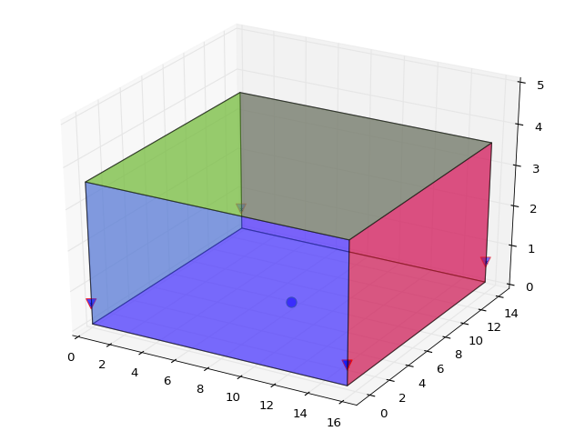
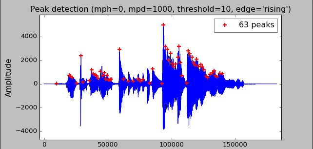

Acoustics
Our first step in sound-based retrieval is to localize our audio source. This involves retrieving and processing microphone data, mathematically locating a position, and providing meaningful error estimates.
Assumptions
Insert assumptions here.
Audio Simulation
We decided to get our data for our PongFinder in a simulated environment. For this we used pyroomacoustics, an 3D acoustic simulation package based in python. This allows us to create a simple shoebox type room given certain parameters (dimensions, wall materials, etc.). We can then place sources (through audio files) and sinks (microphones) throughout our room. Although the simulation occurs in 3D, we can place our sources and sinks all close to the floor, in order to reduce our future approach for mathematical sourcing to a 2D problem. Our room can be seen in the above figure, with our audio source playing on the floor in the middle of the room, with 4 microphones, one at each corner of the room.
Once we're finished setting up our room, we can run our simulation. This represents the given audio file playing at it's location within the room and the recording of that audio by each microphone. This recording can be represented by an array of intensities over a period of time and it is visualized below. The detection of important peaks can be seen as the red crosses.
Source Localization
Essentially what we are doing is the same process as cellphone triangulation by cell towers, but here we are using the propagation of sound instead of EM waves. We know the speed of sound, but we do not know each absolute time it took for the wave to get to each individual microphone. However, since we have a signal array from each microphone, we can calculate the relative time the sound took to travel to each microphone compared to the others. This gives us a system of equations which gives us the distance of the source to each microphone compared to the others. We can then iterate over these equations, starting from a very small distance, slowly increasing until we can converge onto a small enough area. For an enclosed space, we need a minimum of 3 microphones for this to work, however we chose 4 both to minimize error and to have a backup in case one of the signals is becomes unusable for any reason (noisy data, faulty mics). Below is a visualization of the base case of our iterative process, a square room with our signals converging on the point source located at the center of the room.

Using this iterative process does come with it's challenges. For each iteration, our goal is to find the intersections of each function if there are any. These intersections represent possible point sources, but when using this as an application in the real world, we generally can't get one intersection by all functions...
Further Work
Insert further work here.